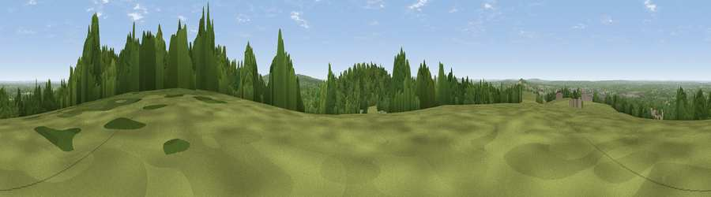

Viewpoint near Chilworth
#15309 in England · top 9% of its area beats it · near ChilworthThe view, rendered

A 360° render of this exact spot computed from the terrain model, tree cover and land cover — summer colours, afternoon light, calibrated against photographs of famous viewpoints. Real trees, hedges and buildings will differ in detail.
The panorama
Grey silhouette: terrain skyline in each direction (720 bearings, Earth curvature and refraction included). Dashed green: skyline with trees (+15 m) and buildings (+8 m) as obstacles. Blue strip: how far the ground is visible on each bearing.
Where the view opens
Wedge length = distance to the farthest visible ground on that bearing (vegetation-aware). Rings at 10, 25 and 50 km.
What fills the view
60% woodland · 29% grassland · 8% built-up · 3% cropland
Angular shares of the visible panorama (visual magnitude), not map area. Landscape diversity 0.42 (0–1 Shannon).
Key numbers
More beautiful places nearby
The staircase of upgrades: each row has a higher view potential than everything closer. Driving times are estimates from straight-line distance, calibrated against real road routing — check an actual route before setting out.
| Place | Direction | Drive | Score |
|---|---|---|---|
| St Martha's Hill | S · 1 km | ~3 min | 59.5 |
| Viewpoint near Guildford | W · 5 km | ~12 min | 65.4 |
| Viewpoint near Compton | W · 7 km | ~14 min | 66.7 |
| Pitch Hill | SE · 9 km | ~17 min | 68.2 |
| Viewpoint near Holmbury St Mary | SE · 10 km | ~19 min | 69.3 |
| Viewpoint near Hascombe | S · 10 km | ~20 min | 69.5 |
| Viewpoint near Hascombe | SSW · 11 km | ~21 min | 70.1 |
| Viewpoint near Coldharbour | ESE · 12 km | ~23 min | 71.3 |
51.23294, -0.52719 · source: screening · position refined by local search. Computed location — check access rights before visiting.